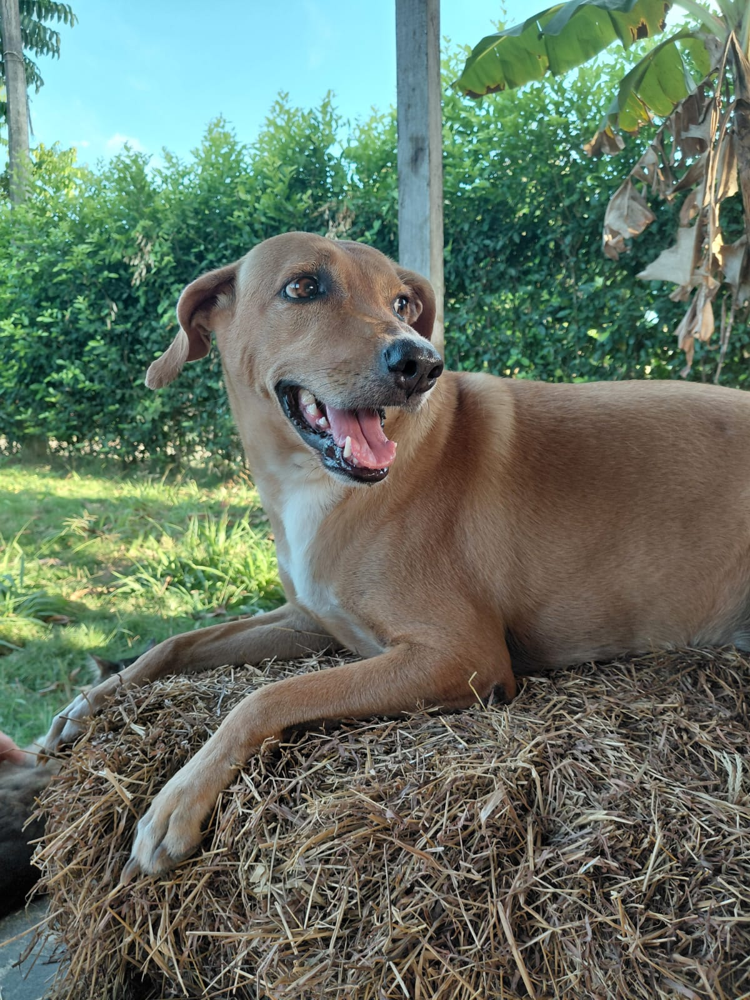

¡Hola, soy Coré!
Conocéme
Soy una perrita mestiza de raza pequeña, con un pelaje suave y sedoso de color marrón claro. Tengo orejas semi caidas y ojos grandes y expresivos que reflejan mi personalidad juguetona y cariñosa. Soy conocida por mi energía inagotable y mi amor por las aventuras al aire libre. A pesar de mi tamaño, soy valiente y siempre estoy dispuesta a explorar nuevos lugares y conocer gente nueva. Mi personalidad amigable me convierte en una compañera leal y querida por todos los que me conocen.

¿A qué raza pertenece?
Hace un tiempo a este tipo de perros los han llamado "firulais" o perros mestizos y callejeros, perros que no tienen una raza, pero Pedigree sacó un comercial como llamado para adoptar a este tipo de perros, en los que los llama "los Caramelos"